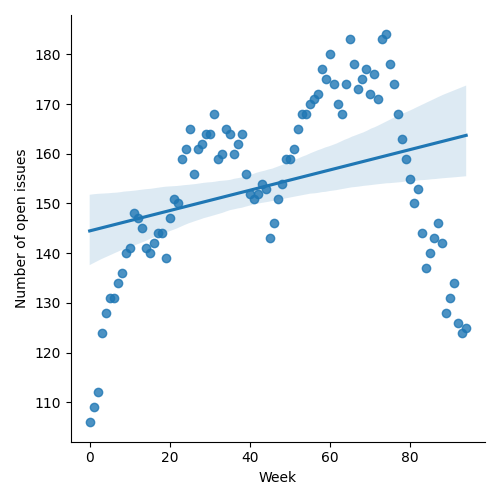
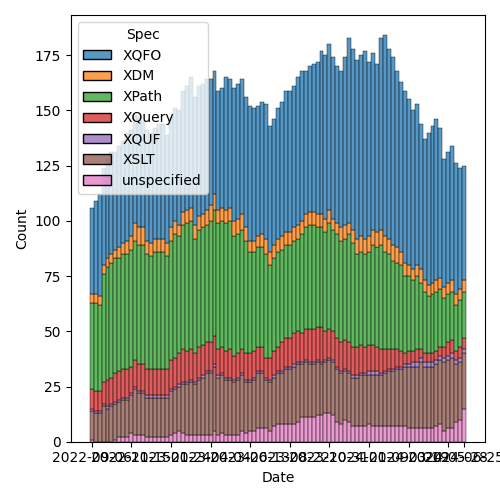
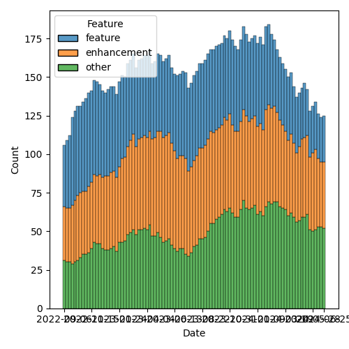

QT4 CG Meeting 084 Minutes 2024-07-02
Table of Contents
Meeting index / QT4CG.org / Dashboard / GH Issues / GH Pull Requests
Draft Minutes
Summary of new and continuing actions [0/3]
[ ]QT4CG-080-05: NW to add absolute property to the parse-uri output[ ]QT4CG-080-07: NW to update the build instructions in the README[ ]QT4CG-082-02: DN to work with MK to come to agreement on the fn:ranks proposal
1. Administrivia
1.1. Roll call [12/12]
[X]Reece Dunn (RD)[X]Sasha Firsov (SF)[X]Christian Grün (CG)[X]Joel Kalvesmaki (JK) [:05-][X]Michael Kay (MK)[X]Juri Leino (JLO)[X]John Lumley (JLY)[X]Dimitre Novatchev (DN)[X]Wendell Piez (WP)[X]Ed Porter (EP)[X]C. M. Sperberg-McQueen (MSM)[X]Norm Tovey-Walsh (NW). Scribe. Chair.
1.2. Accept the agenda
Proposal: Accept the agenda.
Accepted.
1.2.1. Status so far…

Figure 1: “Burn down” chart on open issues

Figure 2: Open issues by specification

Figure 3: Open issues by type
1.3. Approve minutes of the previous meeting
Proposal: Accept the minutes of the previous meeting.
Accepted.
1.4. Next meeting
This next meeting is planned for 9 July.
Any regrets? None heard.
Are we going to take a summer holiday this year?
No meetings 30 July through 27 August.
1.5. Review of open action items [2/5]
[X]QT4CG-079-01: WP to seek expert advice on hashing functions.[ ]QT4CG-080-05: NW to add absolute property to the parse-uri output[ ]QT4CG-080-07: NW to update the build instructions in the README[ ]QT4CG-082-02: DN to work with MK to come to agreement on the fn:ranks proposal[X]QT4CG-083-01 MK to revise fn:collation-available to address multiple usages
1.6. Review of open pull requests and issues
1.6.1. Blocked
1.6.2. Merge without discussion
The following PRs are editorial, small, or otherwise appeared to be uncontroversial when the agenda was prepared. The chairs propose that these can be merged without discussion. If you think discussion is necessary, please say so.
- PR #1293: 1289 Delete XQuery Appendix J
- PR #1265: 1161 Further revision of document-uri constraints
- PR #1254: 729 Add rules for use of xsi:schemaLocation during validation
Proposal: merge without discussion.
Accepted.
1.6.3. Substantive PRs
The following substantive PRs were open when this agenda was prepared.
- PR #832: 77 Lookup returning path selection
- PR #1306: 46 Add @as attribute to xsl:sequence
- PR #1296: 982 Rewrite of scan-left and scan-right
- PR #1283: 77b: Update expressions
- PR #1266: 1158 Add array mapping operator
- PR #1263: 1224 Add xsl:accumulator-rule/@priority attribute
- PR #1262: 1160 Add collation-available() function
- PR #1244: 566-partial Rewrite parse-uri
- PR #1228: – Adding the BLAKE3 hashing algorithm to fn:hash
- PR #1209: 1183 Add transient mode and the transient{} expression
- PR #1185: 1179 array:values, map:values → array:get, map:get
2. Technical Agenda
2.1. PR #832: 77 Lookup returning path selection
See PR #832
MK introduces the change, reviewing the XPath specification.
- MK: Modifiers used have changed. One side-effect of the proposal is that
lookup on arrays no longer fails if the index is out-of-range. Maps and arrays
are more symmetric.
- … Modifiers are now singular. The “content” modifier is a bit problematic, but we can live with it.
- … Type qualifier is extended to allow an abbreviated syntax for record and array tests.
MK walks through the semantics in the specification.
- MK: There’s no duplicates elimination as with “//” if you use the “??” operator.
- … 4.13.3.4 Selection Paths is new.
- … Lookups return not only the selected values but also a path to the values.
- … The properties for getting additional values are functions so that we don’t get cycles.
- DN: I have a few comments and questions. First, I want to say this is very complicated and is a very big change. I have a procedural proposal for the group. How are we expected to vote?
- NW: With my chair’s hat on, I must observe that the agenda explicitly called out that this was a large item and we were going to review it today.
- DN: If we have an array of size 10, but we’ll get no error if we request item 20?
- MK: With the lookup operator, that’s correct.
- DN: But array[20] would still raise an error?
- MK: That’s correct.
- JLY: I discovered an ambiguity about type qualifier yesterday. I suspect that even record would do the same thing.
- MK: I’m slightly surprised because a function call isn’t something that can act as a key specifier.
- JLY: It comes from higher up. The bracketed part becomes the argument list and that causes ambiguity.
- CG: The record test and array tests were added as a shortcut. Why not map test?
- MK: I added the ones that were used most frequently. Others could be added, but those two seemed the most useful.
- CG: Maybe maps as well.
- CG: I think most people will use the default and the default is now called “content”. If we use the term content we could possibly use it in more places. It seems fairly central to 3.1 lookup semantics.
- RD: I’d prefer if we didn’t use custom syntax in the XQuery even if it is for documentation purposes. We could end up in a situation like we have in fn:concat where we introduce some syntax in the spec that isn’t actually syntax.
- MK: Yep.
- RD: So maybe something like an
op:add-label(s)or something… - MK: Okay. I take that point, we can try different ways of doing it. Perhaps
op:with-labelmight work. - JLO: This was a lot to take in, I wonder where the
selection-keysfunction comes from. - RD: Isn’t it in functions and operators?
- JLO: Could these fields (parent, ancestors, root, etc) be overwritten?
- MK: No, these are in the map returned by the entries function. What you get
otherwise are properties in the label.
- … This is a lot easier to understand if you have an implementation to experiment with. The next stage would be to update the implementations and then try some usability testing.
- JK: Just wanted to express my gratitude for this proposal. It really satisifies a use case I’ve had. A question that shouldn’t concern me, but if you have a map with millions of entries, is that a performance concern?
- MK: There certainly is extra data to be maintained. That data should be
transient. If you’re implementing the lookup function with lazy evaluation, in
many use cases, you’ll only have one instance of the result at any one time.
- … There is some implementation complexity. And it gets worse when you consider update. But that will be a separate proposal.
- JK: If someone iterates over a map of millions of items could be problematic?
- MK: The iteration has to keep track of the stack for how you reached the item.
- … Initially, I said you had to pin the map, but from prototyping, I came to the decision that it was better to put the burden on the implementor to work out the extra work.
- JK: I appreciate that.
- JLY: There are two punctuation errors in the example “on that page”.
- MSM: This looks like a lot of work. My understanding may be poor. I have a naive question. If I understand correctly, I can do a lookup and ask for the paths to get to those items. Is the thing returned by the selection path function that there is some function I can pass that to get the items back.
- MK: I think that’s covered in Functions and Operators, let’s go look there.
MK moves on to look at the changes in Functions and Operators.
(Some kerfuffle about what version of the spec to review; the diff version is very complicated because a function is being replaced.)
MK reviews the fn:selection-path function.
- MK: You get access at each level to what the container is, what the key is,
and if the value is a sequence, then the position of the item in the sequence.
- … The example in the spec describes a recursive data structure.
- MSM: I think the bottom line answer to my question is ‘no’. I can get a sequence of things, but I don’t know of a function to which I can pass that sequence and get back “the thing I looked up”.
- MK: I think you could write such a function, but it’s not clear.
- MSM: FWIW, I’m thinking of some missed opportunities in the history of XML and
of pointing in XML. It’s easy to construct a fully qualified generic
identifier, but there was never a function that went the other way.
- … It would be nice if we didn’t miss the same opportunity here.
- CG: Maybe it would be helpful to have an example that shows a full result without additional paths.
- MK: Additional examples that explain it incrementally.
- CG: I think it would be good to reverse the first item first. The
fn:pathfunction starts with the root. - MK: Yes, I’m sure there are use cases for both. The outermost-first path does seem more natural.
- WP: I’m with MSM, I think there’s a huge potential here but maybe we need a
little more work to do to see how we could leverage these things.
- … Based on what MSM and RD said, I think there’s a huge potential here for something useful.
- … But it cries out for more examples.
- RD: As I noted in chat, I can see a use for this in logging/test output: here’s the location of the element that differs rather than “these two big maps” are different.
- MK: Certainly options to be explored there. I think JSON-Path has the same issue; they return a location which is essentially the same as a selection path and then under-exploit that idea.
- JLY: Following on from MSM’s question of “can I take the result and go find something”. Is there something we could put in the XML tree lookup that would be rather similar?
- MK: An xsl:evaluate restricted to simple paths, for example. Maybe.
- JLO: JLY, did I understand correctly that you were interested in having this on top of XML as well?
- JLY nods.
- JLY: Yes, I’ve wanted that too! The function
fn:selection-pathhas an input. If that input gives me an empty item back then I know my item wasn’t labeled. - MK: Yes, or your input was empty.
- JLY: Would an “is-labeled” function be useful, so I can test it?
- MK: I’m still exploring whether labels should be exposed directly.
Some discussion of revealing all labels or only the selected labels. It has implementation consequences.
- JLY: I’d like to know if there is a selection path before I attempt the lookup.
2.2. Review of QT4CG-079-01: expert advice on hashing functions
It appears that expert advice is not forthcoming. We’ll close WP’s action and
review alternative plans when next we discuss fn:hash.
3. Any other business
None heard.